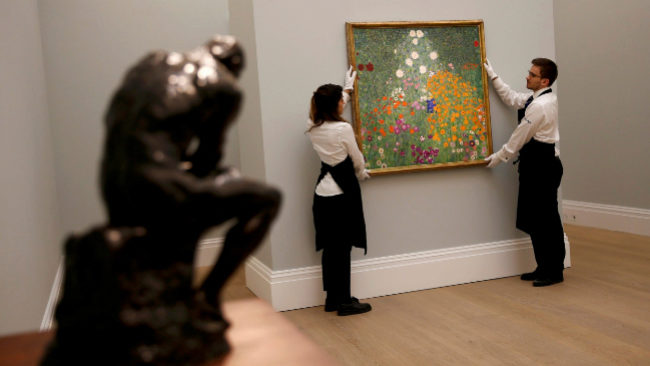

Trump elegido presidente de EE.UU · Donald Trump es acusado de homofobia · Donald Trump aumenta su patrimonio en un 3% · Donald Trump planea da su primera rueda de prensa
 Asia salva de la opacidad al mercado del arte, que huye de las subastas La venta de obras movió en 2016 45.000 millones de dólares, de los que el 70% correspondieron a transacciones fuera de las casas de subastas. · Noticia relacionada 1 · Noticia relacionada 2 · Noticia relacionada 3